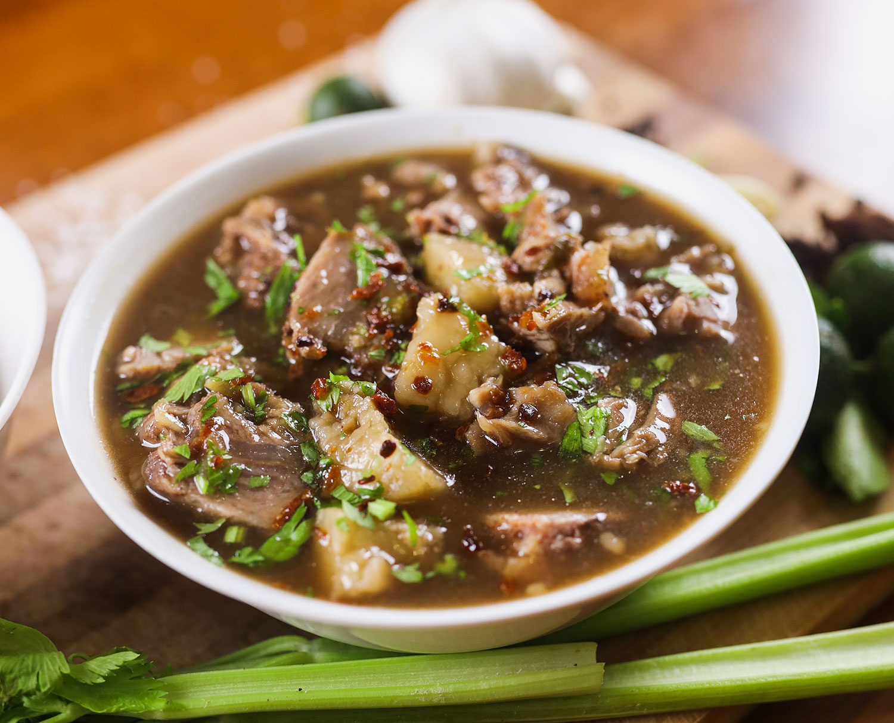
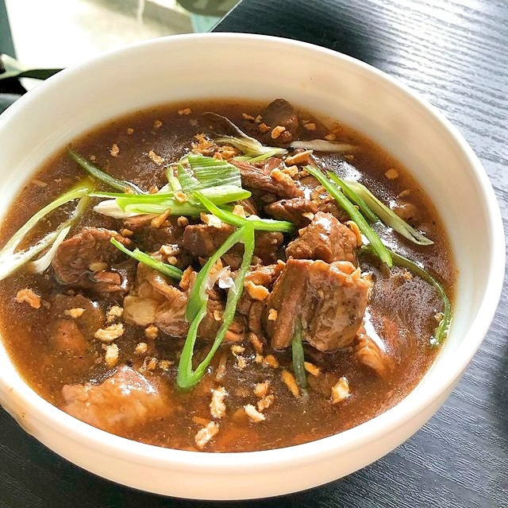

Ingredients:
- 2 ½ lbs. beef cubed
- 1 piece Knorr Beef Cube
- 2 pieces star anise
- ¼ cup brown sugar
- ½ cup scallions chopped
- 2 thumbs ginger minced
- 6 tablespoons soy sauce
- 1 piece onion chopped
- 5 cloves garlic crushed
- 2 ½ cups water
- 3 tablespoons cooking oil
- Salt and ground black pepper to taste
Step-by-step Instructions:
- Heat oil in a cooking pot or pressure cooker. Saute onion, garlic, and ginger.
- Add the beef once the onion softens. Cook until light brown.
- Pour soy sauce and water. Stir.
- Add Knorr Beef Cube and star anise. Cover the pressure cooker and pressure cook for 15 minutes.
- Add brown sugar and season with salt and ground black pepper. Cook for 8 to 10 minutes more or until the sauce reduces a bit.
- Top with chopped scallions and serve with sinangag and beef stock. Share and enjoy.